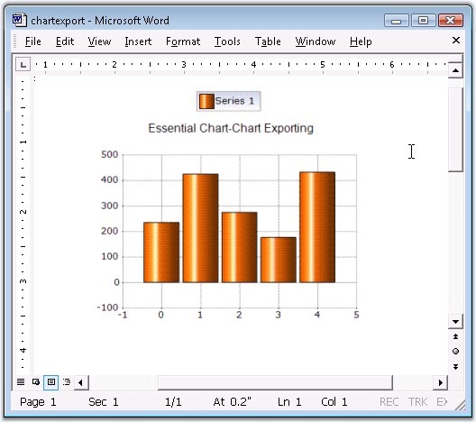

The chart control can be exported to a Word doc file as an image using Essential DocIO. The chart control provides APIs to convert it to an image, while DocIO lets you insert this image into a Word Document file programmatically.

Figure 350: Exporting Chart to DocIO
Given below are the steps that will guide you through this process.
1. Add the Syncfusion.DocIO.Base and Syncfusion.DocIO.Windows assemblies.
2. Add the namespace Syncfusion.DocIO and Syncfusion.DocIO.DLS in your form.
|
[C#]
using Syncfusion.DocIO; using Syncfusion.DocIO.DLS; |
|
[VB.NET]
Imports Syncfusion.DocIO Imports Syncfusion.DocIO.DLS |
3. Add the code snippet that is given below in your form.
|
[C#]
string fileName=Application.StartupPath+"\\chartexport"; string exportFileName = fileName + ".doc"; string file = fileName + ".gif";
this.chartControl1.SaveImage(file);
// Create a new document. WordDocument document = new WordDocument();
// Adding a new section to the document. IWSection section = document.AddSection(); // Adding a paragraph to the section. IWParagraph paragraph = section.AddParagraph();
// Writing text. paragraph.AppendText( "Essential Chart" );
// Adding a new paragraph. paragraph = section.AddParagraph(); paragraph.ParagraphFormat.HorizontalAlignment = Syncfusion.DLS.HorizontalAlignment.Center;
// Inserting chart. paragraph.AppendPicture( Image.FromFile(file)); // Save the Document to disk. document.Save(exportFileName , Syncfusion.DocIO.FormatType.Doc );
// Launches the file. System.Diagnostics.Process.Start(exportFileName); |
|
[VB.NET]
Dim fileName As String =Application.StartupPath & "\chartexport" Dim exportFileName As String = fileName & ".doc" Dim file As String = fileName & ".gif"
Me.chartControl1.SaveImage(file)
' Create a new document. Dim document As WordDocument = New WordDocument() ' Adding a new section to the document. Dim section As IWSection = document.AddSection() ' Adding a paragraph to the section. Dim paragraph As IWParagraph = section.AddParagraph() ' Writing text. paragraph.AppendText("Essential Chart") ' Adding a new paragraph. paragraph = section.AddParagraph() paragraph.ParagraphFormat.HorizontalAlignment = Syncfusion.DLS.HorizontalAlignment.Center
' Inserting chart. paragraph.AppendPicture(Image.FromFile(file))
' Save the Document to disk. document.Save(exportFileName, Syncfusion.DocIO.FormatType.Doc)
' Launches the file. System.Diagnostics.Process.Start(exportFileName) |
A sample demonstrating the above is available in our installation at the following location:
"My Documents\Syncfusion\EssentialStudio\Version Number\Windows\Chart.Windows\Samples\2.0\Export\Chart Export Data"